Últimos Juegos
Links Seguros
Todos los juegos son revisados antes de publicarse
Optimizado para PC
Funciona incluso en computadoras de bajos recursos
Descarga Directa
Sin acortadores ni publicidad molesta

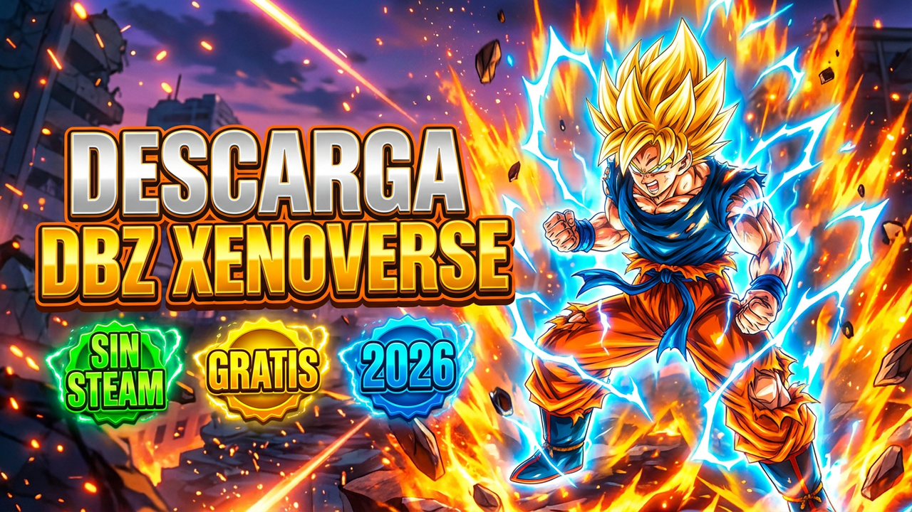
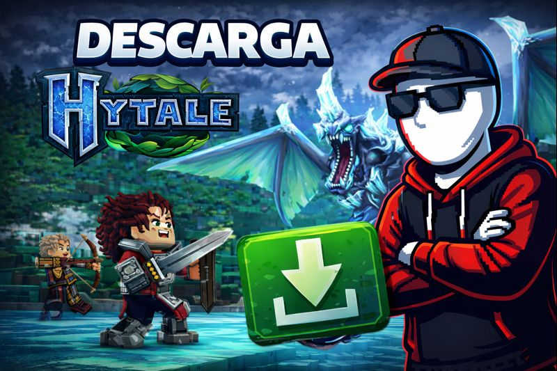
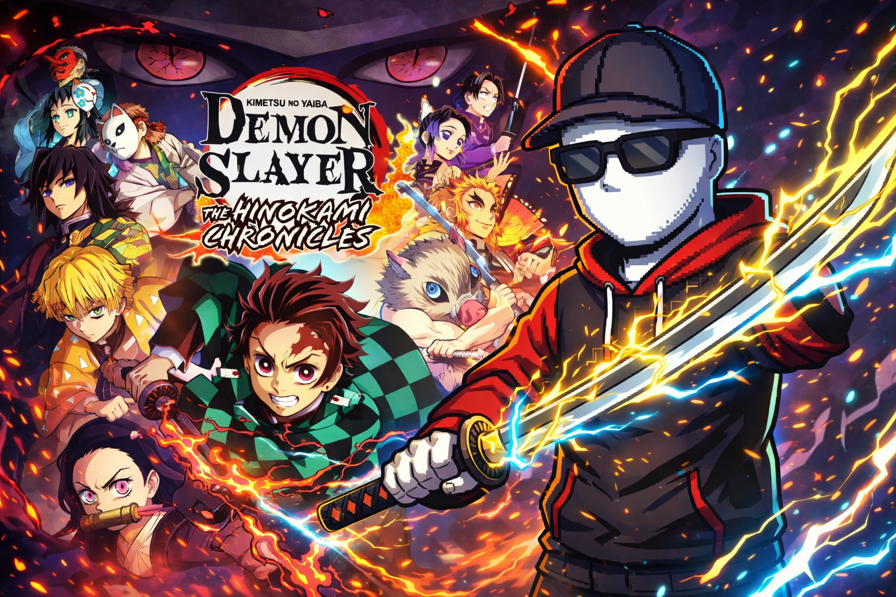
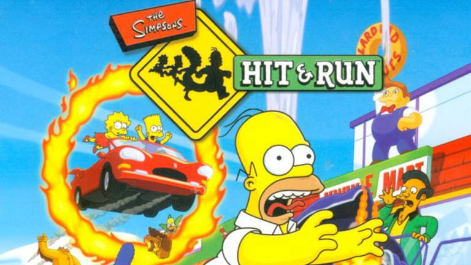

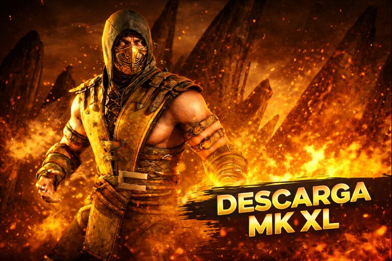

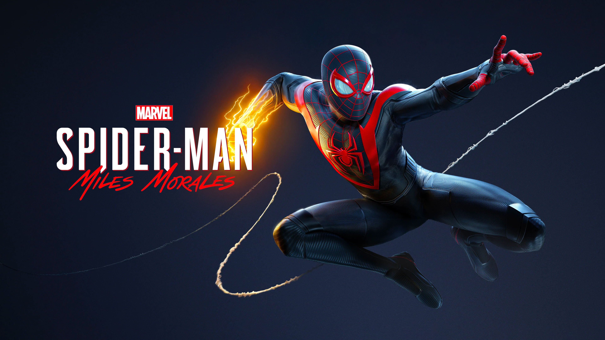

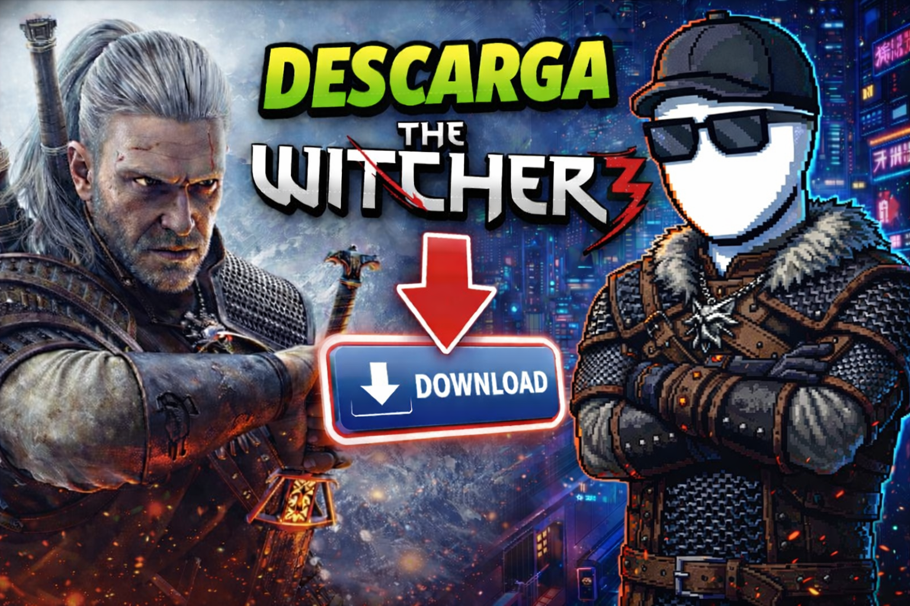

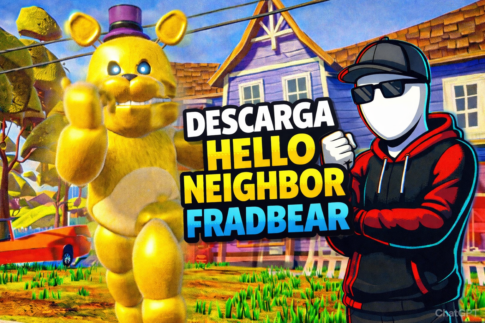


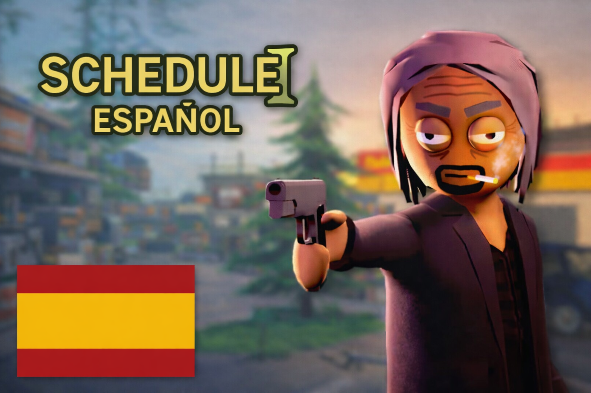

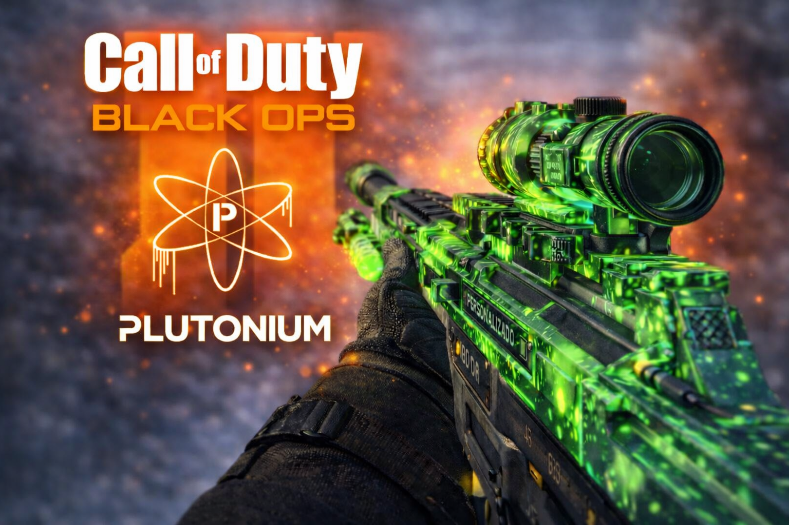
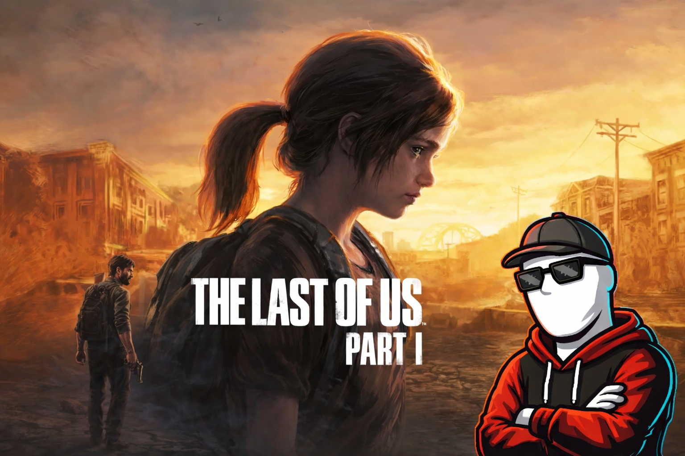
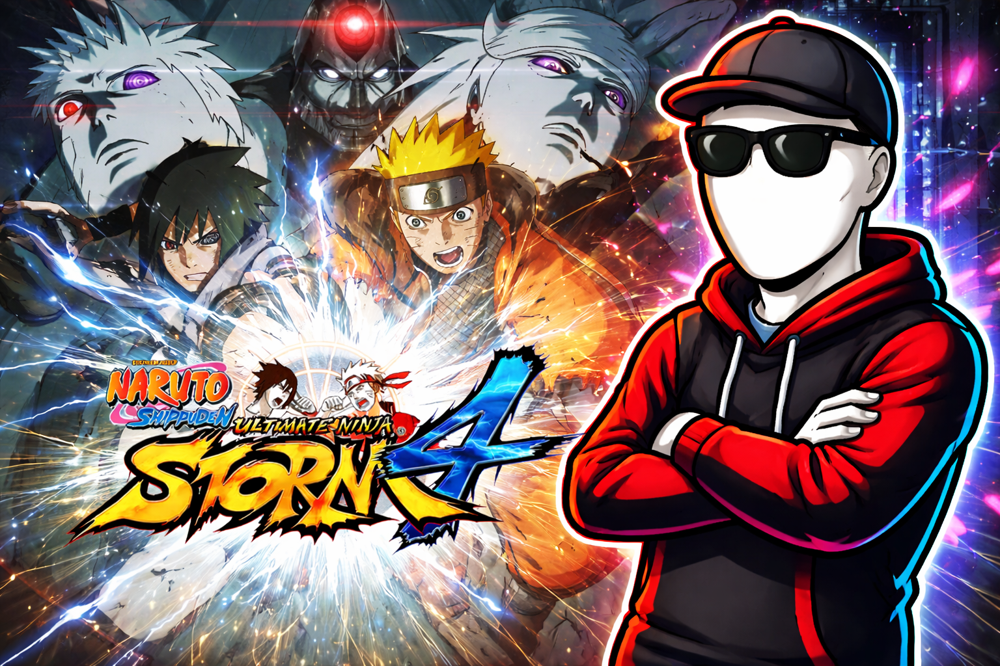
Sígueme
Aviso Importante
Esta página no aloja archivos en sus servidores. Todos los enlaces pertenecen a sitios externos. El contenido es solo informativo.